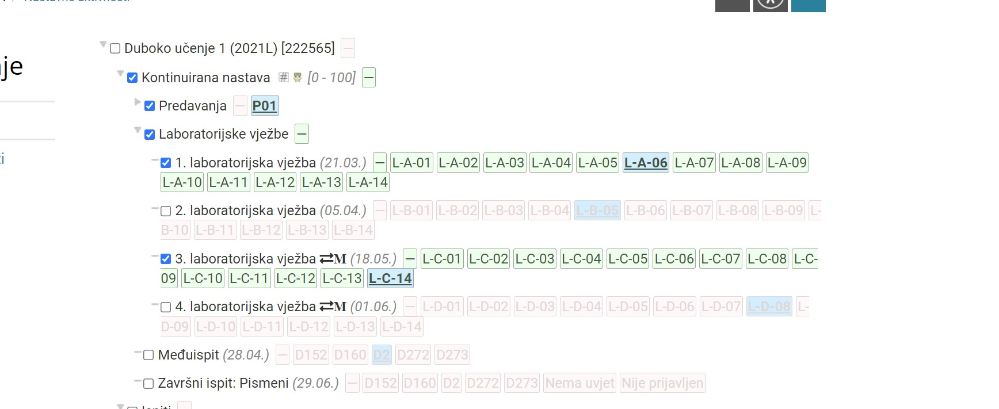

 kak se mjenja grupa na ovom jebenom UX-u od ferweba ? Mico ostavi me tu i ne diraj jebeni post niko ne gleda opcenito o predmetu
𝐓𝐇𝐄 𝐒𝐄𝐂𝐑𝐄𝐓 - 𝐂𝐋𝐔𝐁 https://www.fer.unizg.hr/grupe, odabereš DU, onda imaš ekran gdje možeš odabrat u koju grupu hoćeš
Ovo ti prikaže kad je koja grupa, jer ti samo po sebi grupa L-D-14 ništa ne znači
Kako funkcionira nadoknada labosa?
filip Obično to bude krajem semestra (računaj zadnji tjedan nastave), a nadoknada je organizirana identično kao i ostale vježbe, znači pišeš blic i imaš usmeni dio
Ima netko da je iša na predavanja i zna jel prezentacije na ferwebu prate gradivo s predavanja ili ima odstupanja? Planiram se uključit kontinuirano pa me zanima šta je dosad odrađeno.
koje gradivo ulazi u 4 lab
steker gradivo zadnjeg predavanja
pdf 7: Metrička ugrađivanja
Kaj brijete jel mogu doc na neki random termin za labos ak sam svoj danas propustil?
Banananjeros Ne? Postoji nadoknada za to.
Sto se sve obradilo od međuispita? 3, 4, 5, 6 i 7?
Rene 5, 6, 7 i djelomično 3.
Kada ce bit objavljen raspored nadoknada labosa
at5611 evo objavili su
Sto ste odradili i do kud ste dosli na zadnjem predavanju prosli petak (27.5.2022.)?
Jel se može doći na labos samo blic pisati bez da predamo kod?
filip na prijašnjim vježbama su za to znali slati na nadoknadu
filip ja sam na trecem labosu napisala blic i samo izasla van bez da sam ikog ista pitala, i dali su mi bodove iz tog blica
[obrisani korisnik] nama je asistent na 4. Labosu eksplicitno rekao da mozemo otic nakon blica, ali da se onda taj labos ne moze nadoknadit
Trazio sam nadoknadu za labos na koji sam na kraju dosao. Trebam li ista napraviti ili automatski vise nisam na nadokandi?
Alfetta to će samo petrica znati
Nisam predao 2. labos, ali imam već preko 50% iz labosa, jel uvjet da moramo imat predane sve labose ili je okej samo imat >50% ?
Jaster111 nisam isao na predavanja, ali na uvodnoj prezentaciji pise da za pristup zavrsnom treba bar 8 bodova, a za pristup roku treba bar 10 bodova Ne pise da treba predat sve ako se ne varam